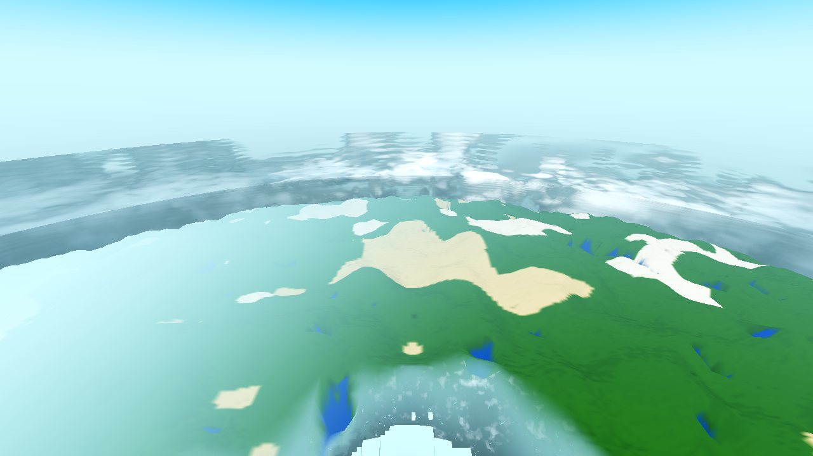
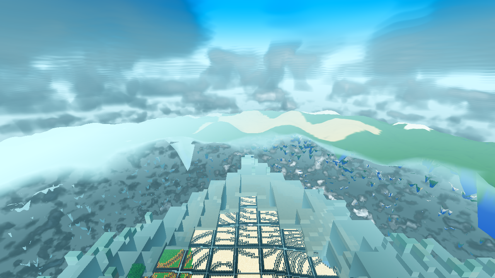
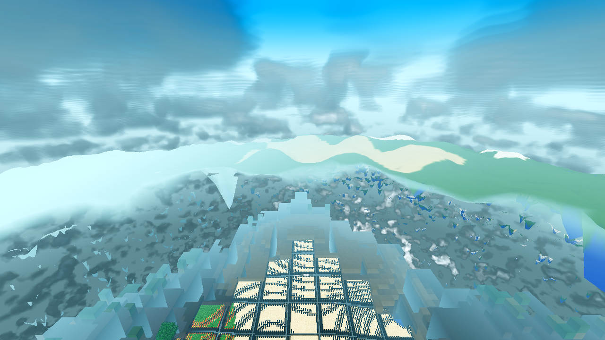
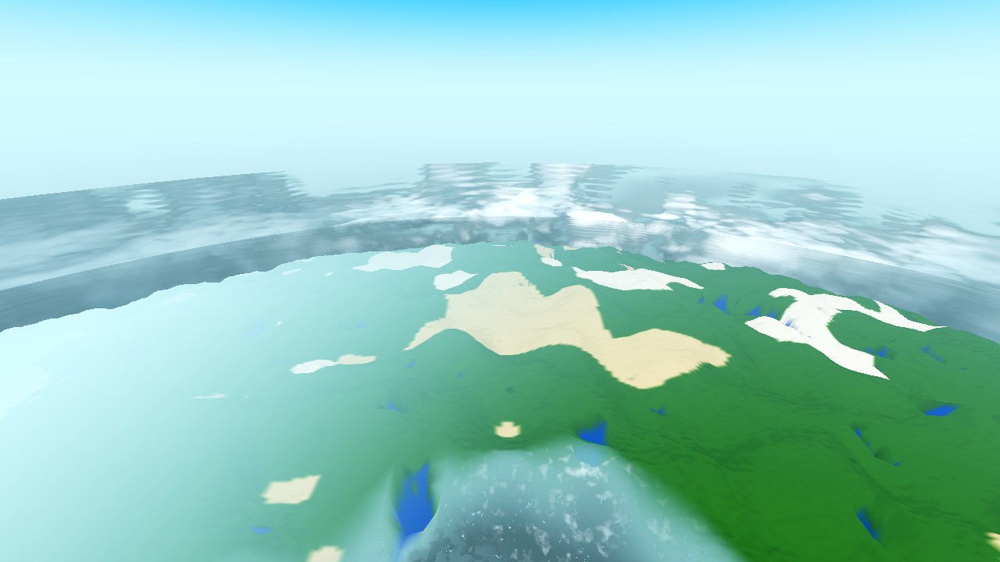
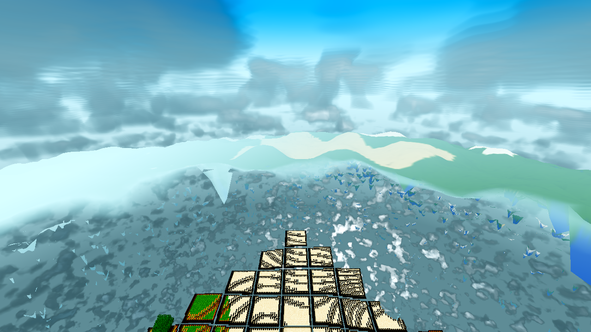
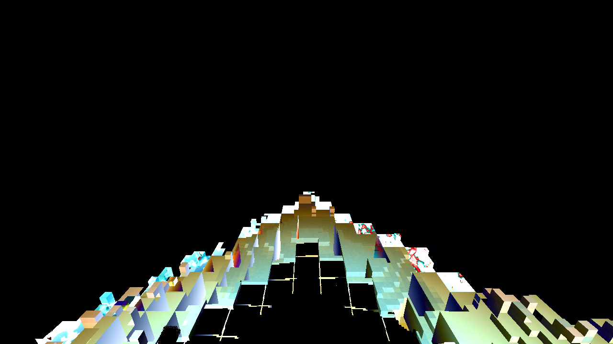

frames (before / after per state)







Run: R24/F83 user config (u_fog_far = 332.0 m, render edge 400.0 m), seed 44, TIME 0.30, Forward+ lavapipe, 1280×720, snapshot drain 600 frames, 8 A/B renders (4 before + 4 after, 2 altitudes × fog on/off), all rc=0 / 0 SCRIPT ERROR / 0 SHADER ERROR, Forward+ boot line in every render log. Acceptance measured from frames, not code. No commits — coordinator. The 4 fenced WIP files (main.gd, game.gd, drop.gd, debug.gd) were untouched, read-only.
| Item | Result | Measured evidence |
|---|---|---|
| 1 — the far tier carries its own duplicate of the fog | DELETED | lod_avg.gdshader dropped render_mode fog_disabled and the manual haze (the u_air mix,
u_fog_near, the per-frame window push from main.gd's _update_sky block). The material now rides the engine
environment fog — the standard spatial path every other near-tier material already uses. Uniforms 6 → 2
(day + u_fog_far); dead pushes u_render_edge/u_center (the manual ramp's only other inputs)
gone with the ramp. The AC-0401 partition (d >= u_fog_far → discard) is not fog — it ends the annulus at the
wall so the near tiers never draw over the body's displaced terrain — and stays, fed by the same env value
(env.fog_depth_end) the engine ramp now uses for the fade: one value, one meaning. |
| 2 — the far tier's fog-ON appearance is verified and must not change; the wall band must still match | HOLDS at the verified altitudes · curve finding at low orbit | A/B on300 (the user-verified altitude class): 0.81% px differ — inside the 1.16% run-to-run noise floor (determinism control pair), wall-band strip (y 340–380) max delta 0 — no visible change. A/B on120 (low orbit, the annulus is 27% of the frame): 15.3% px differ, mean Δ33, max Δ121 — a haze-weight redistribution inside the annulus only (diff map: the change traces the annulus silhouette; body, sky, cloud deck, band A, the wall seam and everything above y≈420 are unchanged). Cause, measured: the engine's depth ramp is a smoothstep across the view range while the deleted manual ramp was linear over the same [100, 332] window — they agree only at the endpoints (§ "The engine ramp, measured"). Wall band: at 300 m the strip is byte-stable; at 120 m the wall row (y 425–475) differs only in the mid-frame column by Δ≤19 — the mid-annulus shift bleeding in, not the seam (both sides still take their colour from the single-source air value; the engine factor is 1.0 exactly at the wall). |
| 3 — the AC-0399/0400/0404 fix sites ride the single source | YES | AC-0399 (the fill: vertex colour × day × hash × lit floor) — kept verbatim, untouched by the deletion.
AC-0400 (the single-source air colour: the mix target was u_air = env.fog_light_color =
AeroLib.fog_display(t)) — now the engine's own fog_light_color, the same value the satellite body's
u_air and the sky horizon take: the mix is gone, but its input was never a second source — it was the env
colour pushed per frame (probe: material u_air = env fog_light_color = (0.6308, 0.8796, 0.9647) at TIME 0.30,
both builds). AC-0404 (the fade = the engine depth-fog model, fog-only, bridge removed) — the deletion makes the
letter of that fix real: the annulus now is the engine depth-fog model, byte for the factor at the same view
distance, instead of its hand-rolled linear approximation. Bonus: the band A / annulus boundary is continuous by
construction at every view distance now (same per-pixel factor on both sides) — in the BEFORE build it carried a
≤9% haze-weight step at mid window (band A engine-smoothstep vs annulus manual-linear); r8's "same factor as band A"
comment was true in intent, approximate in fact. |
| 4 — the fog-off state | UNCHANGED (measured) | A/B off300: byte-identical PNGs (0 px differ). A/B off120: 2.98% px differ at Δ≤2, only 13 px above Δ8 — noise floor. In the fresh NO_FOG state both builds discard the annulus entirely at the stale 100 m partition wall (at 300 m the annulus view distance starts ~205 m, at 120 m ~134 m — both > 100), so the annulus draws nothing and the fog-disabled env leaves everything else as-is. The user's actual runtime-toggle state (stale 332 wall after toggling fog off mid-play — the "flat pale-blue plateau") is the case this fix serves: in the AFTER build the annulus shows true vertex colour up to the wall instead of the manual ramp hazing it to u_air with the engine fog off. That state needs an input arm to reproduce; it is not reproducible in these headless snapshot runs — stated, not measured. |
The A/B at 120 m showed a real (subtle) difference the "same factor as band A" premise did not predict. Resolution, three independent pieces of evidence:
length(view_position)) — identical to the manual ramp's
length(CAMERA_POSITION_WORLD - v_world_pos). Not view-space z.t²(3-2t), fog_depth_curve = 1.0 default) — not the linear
(d−100)/232 the project's comments assume (daynight.gd: "factor 0 at fog_depth_begin, 1 at fog_depth_end"
describes the endpoints only).Environment::set_fog_mode() auto-sets fog_density = 1.0 for every mode except
FOG_MODE_EXPONENTIAL (environment.cpp) — main.gd's env.fog_mode = FOG_MODE_DEPTH push therefore
carries density 1.0. (The 4.7 enum is {EXPONENTIAL = 0, DEPTH = 1} — probe fog_mode=1 = DEPTH.)Live probe (AFTER tree, f=1…642, identical state to the BEFORE probe run): mode=play fog_on=true
env_begin=100.0 env_end=332.0 env_color=(0.6308, 0.8796, 0.9647) fog_mode=1 fog_density=1.0 fog_curve=1.0,
material u_far=332.0 (the undeclared u_near/u_air reads return the stored no-op push
values — the 4 dead main.gd pushes are inert; the u_fog_far push at main.gd:1477 stays live).
Consequence: smoothstep < linear for d < 216 (near annulus less hazy in AFTER, 77% of the differing pixels) and smoothstep > linear for d > 216 (far annulus more hazy, 23%, up to +7–9% haze weight approaching the wall). Equal at both endpoints — which is why the wall band is byte-stable at 300 m and stable within the mid-annulus bleed at 120 m. (The per-pixel k-ratio was checked as a discriminator and rejected: the before-vs-before-control pair shows the same k spread from run-to-run surface noise alone; the collinearity test still holds — 92.6% of differing pixels lie on the same air-colour line, proving same surface + same air + different factor — and the source + probe fix the curve.)
| File | Change |
|---|---|
godot/core/lod_avg.gdshader |
139 → 81 lines (−58). render_mode fog_disabled removed (material rides the engine env fog); the manual
haze deleted (u_air, u_fog_near, fog_f, haz, the mix line); dead uniforms
u_render_edge/u_center deleted; header compressed to an AC-0415 note (full r8/AC-0399/AC-0400/AC-0404
history in those results pages). Kept: the AC-0252 hash/jit breakup, the AC-0283 P3 lit floor, the vertex-stage world
position, the AC-0401 partition discard, ALPHA = 1.0. Final shader: |
| File | Change |
|---|---|
godot/ARCHITECTURE.md |
Two regions synced: (a) §3 WorldEnvironment bullet — the AC-0415 note (single source, seam preserved at the
endpoints, the measured smoothstep-vs-linear finding, the band A/annulus boundary now continuous by construction,
the partition is not fog and stays); (b) AC-0338 bullet — the stale "HAZE BRIDGE" sentence replaced with a
superseded-by-AC-0415 pointer (the AC-0401 sentence kept intact). git diff verified clean. |
Fenced files untouched, read-only: godot/scenes/main.gd, godot/autoload/game.gd,
godot/entities/drop.gd, godot/autoload/debug.gd (another session's WIP, still M).
main.gd:1474–1479 keeps its 5 pushes: 4 become stored no-ops (the shader no longer declares
u_air/u_fog_near/u_render_edge/u_center), the u_fog_far push at
line 1477 stays live — the ticket lands the push deletions in the coordinator's commit when the fence lifts.
godot/world/world.gd carried two temporary measurement probes during the run; both removed, byte-identical
to HEAD (git diff empty) — genhash safe.
| Pair | State | Differing px | d≥8 | Mean / max Δ | Reading |
|---|---|---|---|---|---|
| on300 | fog ON, alt 300 m | 0.81% | 0.67% | 15.9 / 133 | No visible change — inside the 1.16% noise floor; wall-band strip (y 340–380) max delta 0; the annulus is barely drawn at this altitude (view distance starts ~327 m at the wall). |
| on120 | fog ON, alt 120 m | 15.3% | 13.9% | 32.8 / 121 | Mid-annulus haze-weight shift (smoothstep vs linear, § above): near annulus less hazy (77%), far annulus more (23%); row-band diff 0.00% for y < 360 (body/sky/deck unchanged), change traces the annulus silhouette in the diff map; wall row Δ≤19 mid-frame only. |
| off300 | NO_FOG, alt 300 m | 0.00% | 0 | — | Byte-identical PNGs — annulus entirely past the 100 m partition in both builds; fog off in both. |
| off120 | NO_FOG, alt 120 m | 2.98% (Δ≤2) | 0.0014% (13 px) | 1.0 / 18 | Noise floor — same reason as off300 (annulus discards at the stale 100 wall in both builds). |





The change traces the annulus silhouette (med/low tier terrain): the crisp voxel core (band A) at the bottom centre, the body disc and everything above the wall are pitch black (unchanged).

| Gate | rc | Result |
|---|---|---|
G0 headless (--headless --path godot --quit + gate_census) | 0 | 0 SCRIPT ERROR, 0 SHADER ERROR — the 4 dead main.gd pushes are no-ops, live-confirmed. |
SMOKE battery player;interact;light;fluids;genhash | 0 | battery ok=true, all five RESULTs green, 25 GENHASH lines, census clean. |
| PROBE meshprobe | 0 | ok=true, match_rate 1.0, 0 mismatches (C++/GD emit parity, quadcheck 0/699). |
| genhash vs reference | 0 | 25/25 drift vs the AC-0367 pristine reference — pre-existing on this dirty tree, not owed to this change: a stash A/B (my 2 files reverted, same tree) shows PRE == POST byte-identical (25/25). world/* and autoload/data.gd are untouched by the final diff, so G2's byte-identical rule does not apply to this change; the pre/post pair is the owed proof. The drift owes to the 4 fenced WIP files and belongs to that session's closeout. |
| shaderforce (Forward+ lavapipe, all 12 shipped .gdshader forced through the live renderer) | 0 | 12/12 verdict=ok, failed=[], 0 SHADER ERROR; lod_avg.gdshader declared=2 params=2 (day + u_fog_far, as expected). |
Heavy gates (boundary/perf, full battery, Windows build) are the coordinator's per the ticket — this run stops at the light set.
u_fog_on flag — the ticket's rejected alternative; "two paths are the disease". The
fog_enabled env switch now governs the far tier with the rest, by construction.fog_depth_curve is exposed on Environment) — reported, not acted on.ac0415-{before,after}-{on300,on120,off300,off120}.png — the 8 A/B frames (1280×720, Forward+ lavapipe, TIME 0.30, seed 44, R24/F83, drain 600); ac0415-diffmap-on120.png — the amplified (×6) before/after difference of the one pair with a real change. Render logs: .scratch/AC-0415/{before,after}/*.log (gate census clean in all).